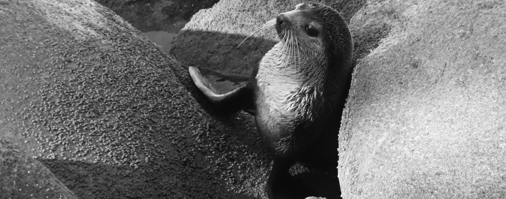

Science made of questions
Interest in Marine Mammals

My academic journey began when I enrolled in the Biological Sciences course at the State University of Santa Catarina (UDESC) in 2017. While still an undergraduate, I started my studies related to marine mammals, specifically investigating the interaction of Franciscana dolphins (Pontoporia blainvillei) with small-scale fishing activities in Laguna, Santa Catarina, southern Brazil. In 2022, I began my master's degree in the Postgraduate Program in Ecology (PPGECO) - Department of Ecology and Zoology at the Federal University of Santa Catarina (UFSC), where I completed my dissertation investigating the acoustic behavior of Franciscana dolphins (Pontoporia blainvillei) in the vicinity of gillnets used in small-scale fishing, also in Laguna. Currently, I am pursuing a PhD in the Postgraduate Program in Ecology (PPGECO) at UFSC, and I am researching the acoustic ecology of bottlenose dolphins (Tursiops truncatus truncatus) that inhabit the Santos and Campos Basins in Brazilian waters of the western South Atlantic Ocean.
Research
Stories behind scientific publications